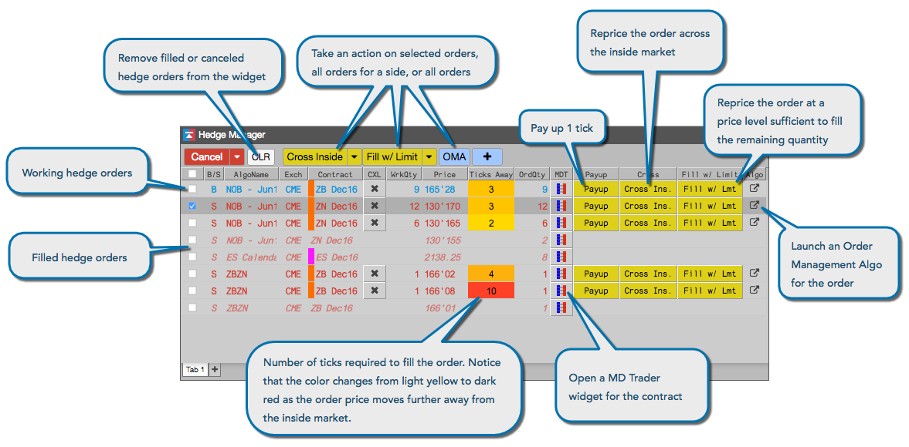

The Hedge Manager widget displays all of your Autospreader hedge orders in a single widget and gives you the ability to act on unfilled hedge orders in various ways. You may cancel or modify a working hedge order directly in the widget, you may quickly launch an MD Trader, you may take quick action using a set of pre-defined action buttons, and you may attach an Order Management Algorithm (OMA) to manage an unfilled hedge order.

As hedge orders are generated, they are automatically added to the widget. As hedge orders are filled or deleted, they are shown in italics and become inactive.
If a spread defines post-hedge rules, those rules will continue to run, monitoring and modifying a hedge order according to its logic. For example, suppose a spread defines a post-hedge rule that pays up one tick if the quantity at a price level exceeds 100. If you modify a hedge order from that spread, such as paying up one tick, that triggers that rule action, the rule will then change the order by paying up another tick.
Likewise, a post-hedge rule takes precedence over an OMA. If you launch an OMA for a working hedge order for a spread with a post-hedge rule, the OMA will stop managing the order if the rule modifies the order.